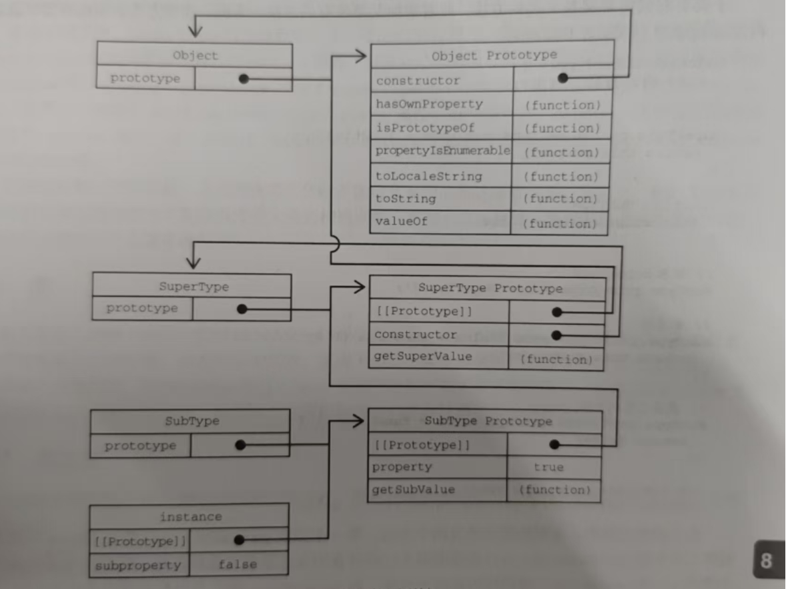

该说说原型链的顶端了，在默认情况下，所有的引用类型都继承自Object ， 这也是通过原型链来实现的，任何函数的默认原型董事一个Object的实例，这意味着这个实例有一个内部指针指向Object.prototype 这也是为什么自定义类型能够继承包括tostring() valueof()在内的所以默认方法的原因 , 看看下面的图
function SuperType() {
this.property = true
}
SuperType.prototype.getSuperValue = function () {
return this.property
}
function SubType() {
this.subproperty = false
}
// 继承 SuperType
SubType.prototype = new SuperType()
SubType.prototype.getSubValue = function () {
return this.subproperty
}
let instance = new SubType()
console.log(instance.constructor);
console.log(instance.getSuperValue()); // true
console.log(instance.getSubValue()); // false

SubType继承SuperType,而Superatype继承Object 在调用instance.tostring()时 ,实际上调用的是保存在Object.prototype上